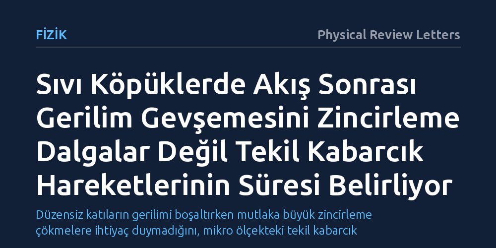

FIZIK · Physical Review Letters · 2026-10-18
Araştırmacılar, akışı durdurulan sıvı köpüklerin biriken iç gerilimi nasıl boşalttığını yüksek hızlı X-ışını tomorheoskopisiyle inceledi. Gerilimin, yaygın kabulün aksine zincirleme dalgalarla değil, tekil kabarcık yer değiştirmelerinin süresiyle belirlenen üstel bir hızla gevşediği bulundu.
Düzensiz katıların gerilimi boşaltırken mutlaka büyük zincirleme çökmelere ihtiyaç duymadığını, mikro ölçekteki tekil kabarcık hareketlerinin tüm malzemenin gevşeme hızını doğrudan belirleyebildiğini gösteriyor.

Tıraş köpüğünden yangın söndürme köpüklerine kadar günlük yaşamda sıkça karşılaştığımız sıvı köpükler, fiziksel olarak hem sıvı hem katı özellikleri gösteren büyüleyici amorf maddelerdir. İçlerindeki gaz kabarcıkları birbirine öyle yoğun şekilde kenetlenir ki malzeme belirli bir kuvvet uygulanana kadar katı gibi durur, şeklini korur ve akmaya direnir. Ancak kuvvet kalktığında ya da bir boru içindeki akış aniden durdurulduğunda köpüğün içinde hapsolmuş iç gerilimin nasıl gevşeyip dengelendiği, yumuşak madde fiziğinin uzun süredir yanıt aradığı temel bir sorudur.
Düzensiz yapıdaki katıların gerilimi nasıl boşalttığını anlamak yalnızca köpükler için değil; emülsiyonlar, taneli malzemeler ve hatta metalik camlar gibi kristal düzeni olmayan tüm amorf yapılar için kritik önem taşır. Bu tür malzemelerin gerilim altında aniden kırılması mı yoksa düzenli biçimde gevşemesi mi gerektiği, endüstriyel karıştırma, pompalama ve malzeme dayanıklılığı süreçlerini doğrudan belirler. Bilim insanları on yıllardır bu gevşemenin mikroskobik boyutta birbirini tetikleyen büyük çığ benzeri dalgalarla mı, yoksa bağımsız yerel hareketlerle mi gerçekleştiğini tartışıyordu.
Köpüklerin iç dinamiğini akış sırasında ve akış durduktan hemen sonra mikroskobik düzeyde izlemek deneysel olarak son derece zordur. Kabarcık zarları ışığı kuvvetle saçtığı için geleneksel optik mikroskoplar köpüğün iç katmanlarını görüntüleyemez; standart reometreler ise sadece malzemenin dışarıdan ölçülen toplam direncini verir, içeride ne olduğunu söylemez. Araştırma ekibi bu engeli aşmak için yüksek hızlı X-ışını tomorheoskopisi adı verilen ileri bir tekniğe başvurdu. Bu yöntem, numuneye uygulanan kayma gerilimini mekanik sensörlerle ölçerken, aynı anda numunenin üç boyutlu iç mimarisini X-ışınlarıyla milisaniye mertebesinde görüntülemeyi başardı.
Deneylerde, kabarcıkların zamanla birleşip büyümesini ve sıvının dibe çökmesini engelleyen, yani fiziksel olarak yaşlanmayan özel bir sıvı köpük formülasyonu kullanıldı. Köpük önce kontrollü bir hızla kaydırılarak akıtıldı, ardından akış aniden durduruldu. Akış durduğu andan itibaren malzemenin akma sınırının altındaki bir artık gerilime ulaşana kadarki gevşeme süreci boyunca; makroskopik kayma gerilimi, kabarcıkların birbirleriyle yaptığı temaslar ve yerel plastik yer değiştirmeler anbean üç boyutlu olarak haritalandı.
Elde edilen bulgular, amorf katı fiziğindeki köklü kabullerin dışına çıktı. Daha önceki teorik modeller ve deneysel çalışmalar, akış durduktan sonra gerilim gevşemesinin sisteme yayılan, uzun süreli ve akış hızına bağlı karmaşık çığ olaylarıyla gerçekleştiğini varsayıyordu. Ancak araştırmacılar, yaşlanmayan sıvı köpükte gerilimin şaşırtıcı biçimde üstel bir fonksiyon şeklinde, düzenli ve hızla gevşediğini ortaya koydu.
Analizler, bu gevşemenin zaman ölçeğini belirleyen asıl unsurun birbiriyle ilişkili kabarcık dalgaları değil, tek bir kabarcığın komşularıyla yer değiştirdiği tekil plastik olayın kendi süresi olduğunu gösterdi. Üstelik gevşeme boyunca kayma gerilimi, malzemedeki plastik aktivite yoğunluğu ve kabarcıkların ortalama komşuluk sayısı arasında son derece sağlam, doğrusal bir afin ilişki saptandı. Yani köpüğün iç gerilimi, tek tek kabarcıkların bağımsız mikro hareketleriyle doğrudan ve orantılı biçimde eriyordu.
Bu çalışma, sıkışmış amorf malzemelerin mekanik hafızası ve akma geçişi teorilerinde önemli bir boşluğu dolduruyor. Makroskopik gerilim gevşemesinin her zaman karmaşık ve kaotik zincirleme çökmelere dayanmak zorunda olmadığını; uygun koşullarda tekil mikro olayların süresinin tüm malzemenin makro tepkisini doğrudan dikte edebileceğini kanıtlıyor. Bu durum, düzensiz katıların içsel dinamiklerini anlamada çok daha sade ve öngörülebilir modellerin kurulabileceğini gösteriyor.
Pratik açıdan bakıldığında ise gıda, kozmetik, inşaat ve petrol gibi sektörlerde yoğun köpük ve emülsiyonların borulardan transferi sonrası durulma davranışlarını tahmin etmek kolaylaşıyor. Karmaşık akışkanların pompalama durduktan sonra borularda ne kadar artık gerilim bırakacağını veya yapısını nasıl koruyacağını hesaplamak, daha az parametre içeren matematiksel denklemlerle mümkün hale gelebilir.